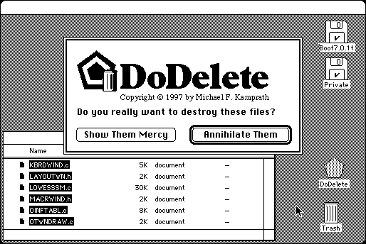

Download
DoDelete.v101.zip (131K) DoDelete 1.1.0a1 repackaged into a zipped hfs disk image and checksum file. The disk image can be mounted with Mini vMac.
DoDelete.v101.sit.bin (131K) DoDelete 1.1.0a1 in the original format.
copyright: Michael F. Kamprath
mod date: Jul 26, 1997
license: shareware
last known url
(gone)
“Secure deletion utility”. For System 7.
This is not so useful for running in Mini vMac. A single write of zeroes is sufficient inside the emulated machine. But for the actual disk on the real machine, even this multiple pass erase running in the emulated machine may not be sufficient, because of issues like caching, and wear leveling on modern solid state drives.

If you find these downloads useful, please consider helping the Gryphel Project, which hosts them.
Here are the md5 checksums for the downloads, signed with Gryphel Key 5:
--------- GRY SIGNED TEXT --------- d3b75b7d4160d84c5c048e87f1be6205 DoDelete.v101.zip 8c4c07e23a8c4418c90f8200f1b056cd DoDelete.v101.sit.bin ------- BEGIN GRY SIGNATURE ------- Gry/4Xa8CFcUzxdN/P35hC2TrGMjAHoW6kjqAT0r7WCXQ7XmSubv/sQ6z8T9VCYL S0x4CFR/V5P+ybQYbkUtia6Cl4Nvo5l4ICI0A1pJgZ01CWEZK9zJwQyOLNRQBSV+ /7h9FJbIExa6TkyM7Bf1R8JITBUcjfA4WUsu+kr0q0zAwFBbszUMg13sF2EWo8pm -------- END GRY SIGNATURE --------